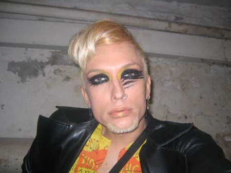

| Maj 2005 |
”Variation, variation, variation!” Sådan lyder forårets hårtip fra frisøren, dunst’eren og stylisten Hairwerk.

Selv om bøsser og lesbiske generelt er progressive og krævende inden for tøj, musik og gastronomi, er mange konservative i deres valg af frisurer. Folk finder en frisure, de synes passer til dem, og så har de den de næste 30 år. Men sådan behøver det ikke at være, fortæller hår-eksperten Hairwerk til Panbladets Barometer.Hairwerk, der også går under navnet Tommy Holbech, er performer, stylist og ikke mindst frisør, og det har han været i over 15 år. Han var med til at starte dunst, og så elsker han hår. ”Det fede ved hår er jo, at det gror ud igen. Det er ikke, som hvis jeg laver et maleri og sælger det til dig; så har du det samme hele livet. Men hvis man laver et kunstværk på hovedet af nogen – så går der bare en måned, og så kan vi finde på noget nyt. Der er også noget dyrisk ved den måde håret hele tiden bliver skubbet ud af kroppen. Det synes jeg er ret frækt.”
Hairwerk er træt af, at folk altid vil klippes på den samme måde og advarer mod de traditionelle klichéer på hovedet af mange homoer: ”Den klassiske homofrisure til mænd er vel crew cut, hvor man klipper håret ultra kort – men det er altså et gammelt læderbøsse-fænomen, og det er det ikke meget sjov ved. Hvis man vil fortælle at man er bøsse, kan man også altid affarve sit hår. Men jeg synes, det er kedeligt at klippe på den samme måde igen og igen, og til nogle kunder har jeg faktisk sagt, at de må skifte frisure eller finde en anden frisør. Variation, variation, variation!”
Hairwerk opfordrer os alle til at tænke nyt og udfordre nogle af alle de mange metroseksuelle, der er begyndt at overhale de homoseksuelle indenom. ”Heteroerne er sgu snart mere outrerede end homoerne. De farver deres hår og plejer i det hele taget sig selv, lige så meget som vi gør. Jeg synes, folk burde tage at eksperimentere lidt mere – især mens de er unge og har håret til det. For en dag er det for sent. Så skal man have transplanteret sit hår, og det kan jeg altså ikke klare.”
Trenden for tiden er minimalistiske og gerne lidt asymmetriske frisurer, fortæller Hairwerk. ”I 90’erne skulle man lave spørgsmålstegn og techno-agtige mønstre i hovedet på folk – det lignede nærmest landingsbaner for aliens. Nu er det nok bare at lave tre helt enkle streger i hårgrænsen. Det er også blevet moderne at hærge håret lidt. Hvis man har et meget smukt og dukkeagtigt ansigt, kan man fx lave hundredvis af bittesmå hak i håret. De små hak ligner en slags ar, og det giver en helt specielt stoflighed i frisuren.”
Hairwerk nøjes bestemt ikke med minimalisme, når han performer sammen med de andre fra dunst. Her går fabelagtige og udfordrende frisurer op i en højere enhed med glitrende kostumer og makeup. ”Den mest outrerede frisure, jeg har lavet, var på mig selv, en gang hvor jeg havde farvet mit hår skriggrønt med hvide striber. Alt, også skæg og øjenbryn havde den farve. Det blev sgu ret flot.”
Hairwerk performer sammen med dunst og kan desuden opleves bl.a. som dj på Kat. Læs mere om Hairwerk og dunst på dunst.dk
http://www.panbladet.dk/artikel/323
Print denne side